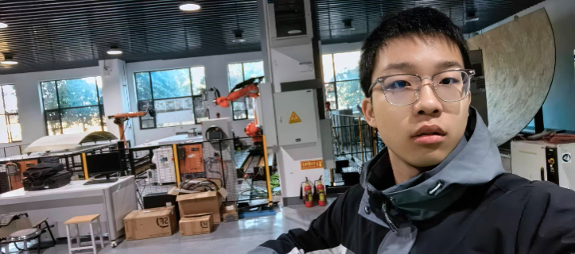

Global Point Cloud Registration for Aircraft Skin
Developed a distributed measurement framework using a 6-DoF cooperative target for aircraft skin point cloud registration in large-scale measurement environments.
Under review at IEEE/ASME Transactions on Mechatronics with major revision.